Yerevan's café culture is especially popular among young people, combining traditional Armenian coffee with modern specialty brewing methods in stylish and welcoming spaces.
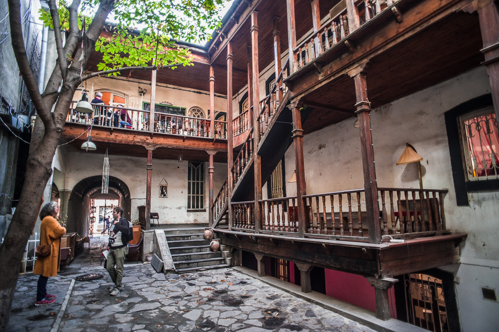
A cozy artistic café with a unique atmosphere and great coffee.
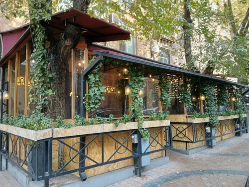
Perfect for students, healthy food, and relaxed vibes.
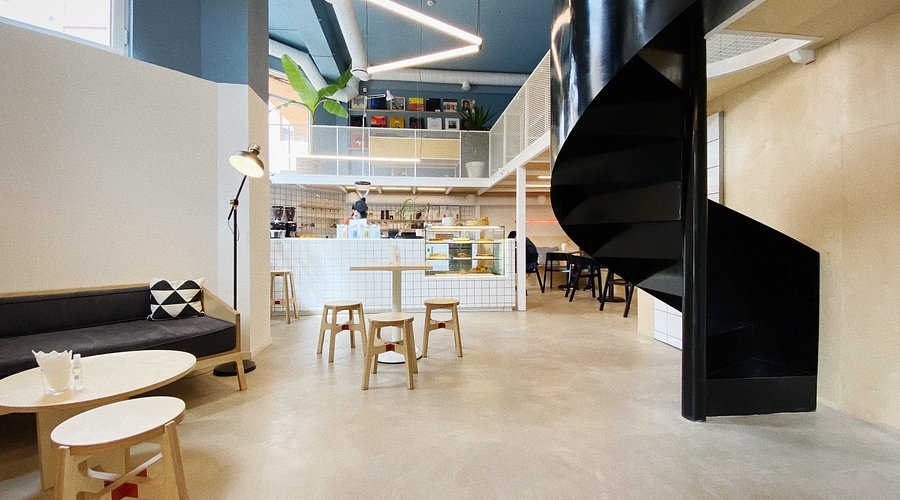
A minimalist and stylish café known for its high-quality specialty coffee. Very popular among young coffee lovers.
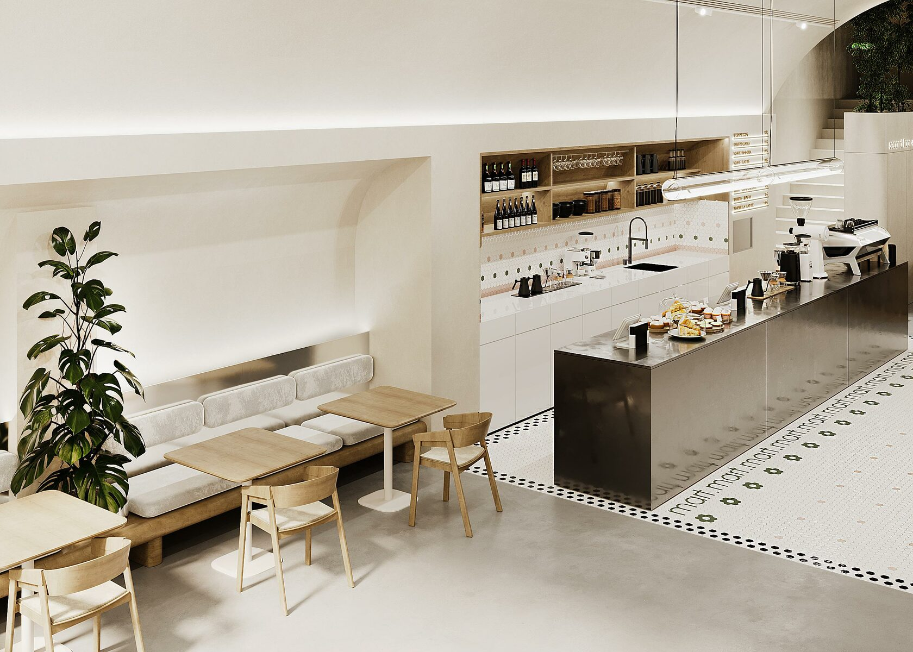
Clean, contemporary design with a relaxed vibe — a favorite place to hang out or study.
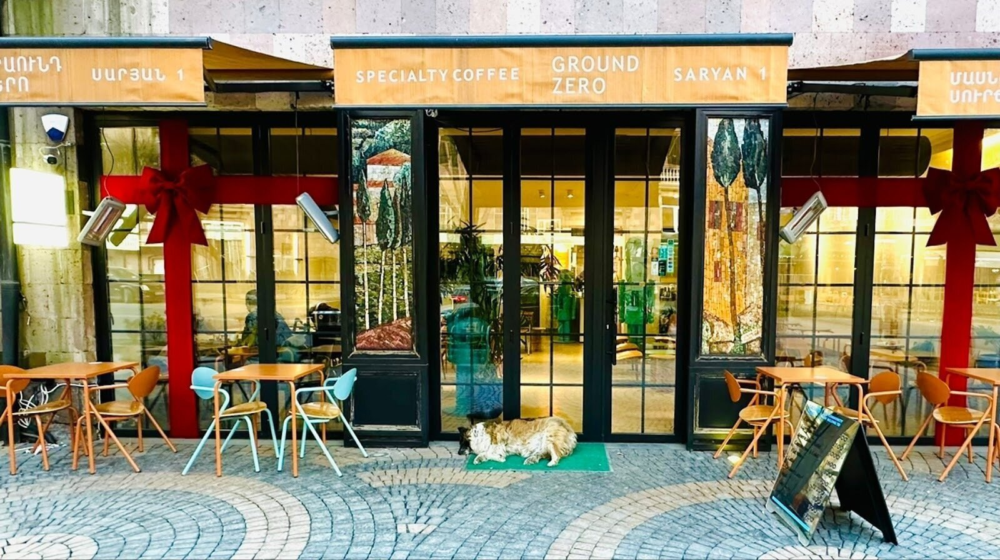
A modern spot offering excellent filter coffee and a calm, aesthetic atmosphere.
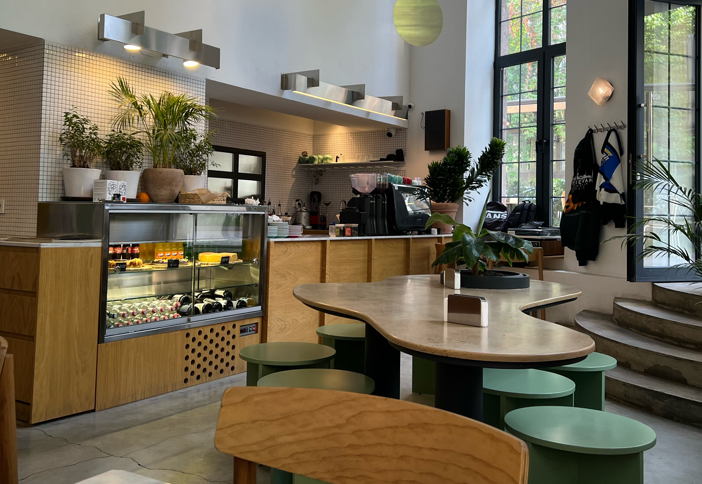
Warm and cozy, perfect for casual meetups and long conversations with friends.
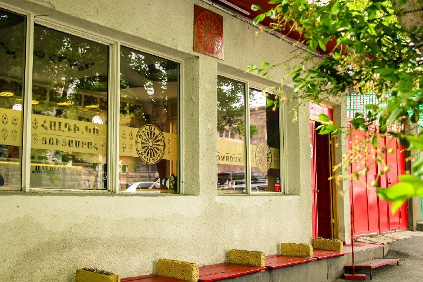
A unique café specializing in Colombian coffee, with a friendly and welcoming atmosphere.
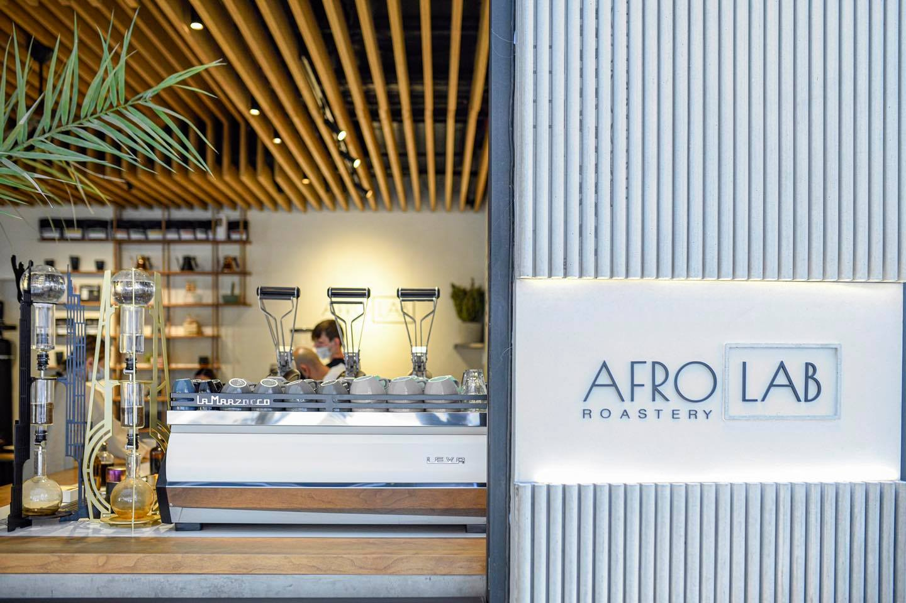
A modern and creative café with a stylish interior and a calm atmosphere, popular among young people.
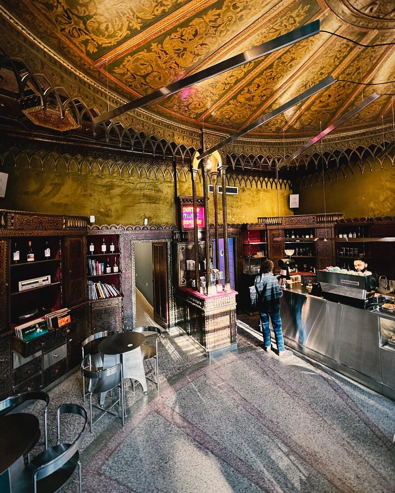
A specialty coffee shop known for high-quality brews, minimalist design, and a cozy vibe.
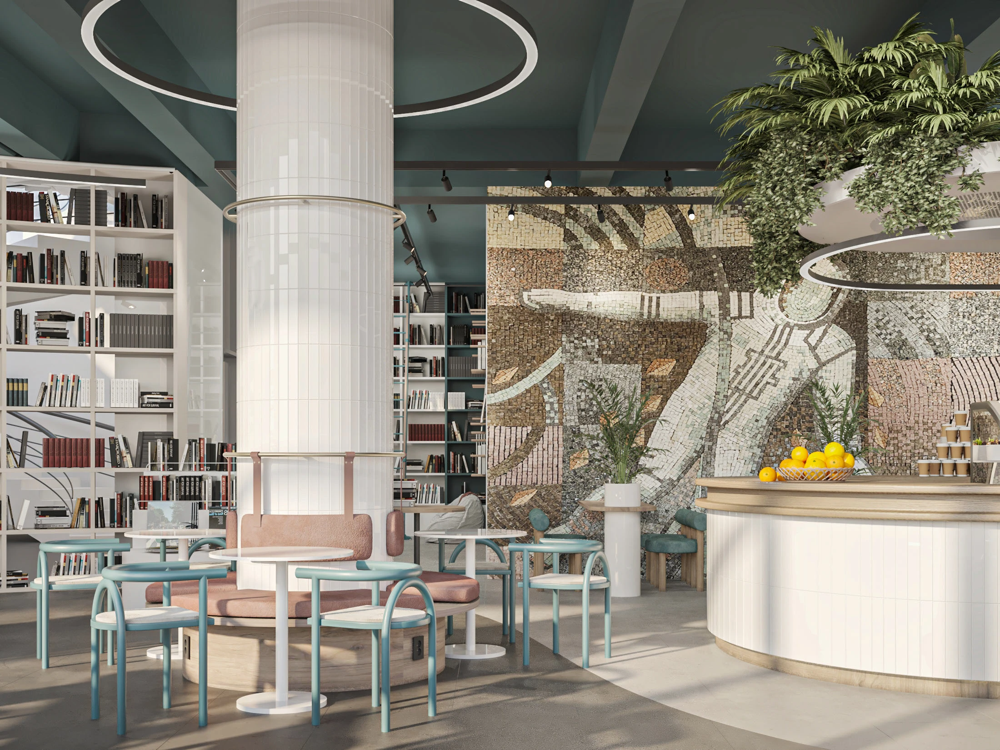
A quiet café inside a bookstore, perfect for reading, studying, or relaxing with coffee.
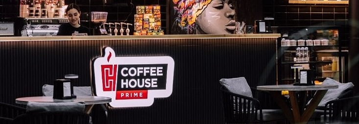
Don't forget Coffee House — often called the “Armenian Starbucks” by locals. It can be found in many places around the city and is one of the most popular spots for takeaway coffee among locals and tourists. It's a simple and easy way to experience everyday coffee culture in Yerevan.
All recommended cafés are marked on the map below.